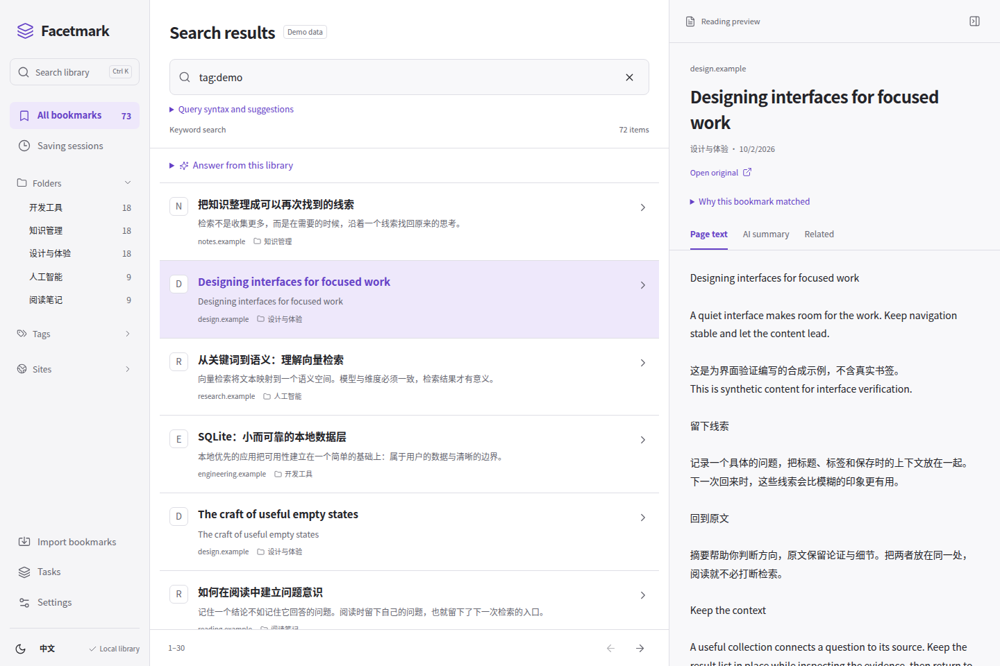
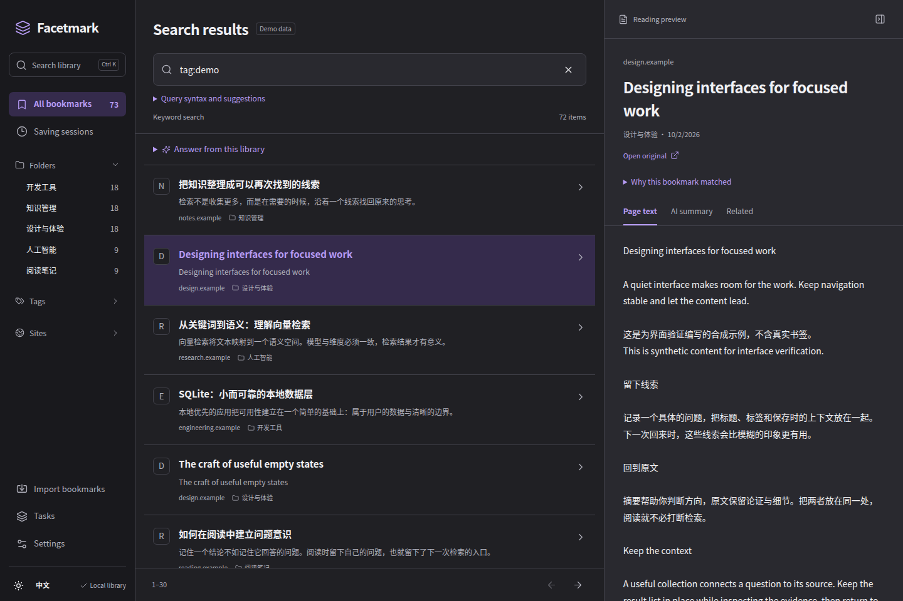

Windows desktop preview#
The test branch adds a Tauri 2 desktop app and a shared React workbench. Configure chat and embeddings independently, test both, then confirm indexing. Keyword search works without keys. Original browser bookmarks are read-only.
Download unsigned preview builds
Download facetmark-windows-x64-preview from the latest successful run. The installer includes the Python backend and offline WebView2, without large models. This is an unsigned test package, may trigger SmartScreen, and is not a production release.
Open and pair#
facetmark serveVisit http://127.0.0.1:8787/app on the service machine for automatic pairing. From another device or hostname, enter the token printed by facetmark token on the server.
First run#
- Import an HTML or JSON copy, or explicitly discover and select a local Chromium source.
- Configure chat and embeddings independently, test both, check measured dimensions, then save and apply. Keyless access is limited to explicitly configured loopback services.
- Confirm what is sent before indexing. You can skip AI and search by keyword. Tasks show stages and actual failures, with cancellation and retry.
Choose a task#
| View | Purpose |
|---|---|
| All bookmarks | Paginated browsing with folder, tag and site filters; search with words or query syntax. |
| Reading preview | Page text, AI summary and related pages. Originals open externally; preview preserves your query. |
| Answer from this library | Above search results. Confirmation sends the question and up to 8 source excerpts; answers carry numbered citations and evidence limits. |
| Saving sessions | Select a saving session and search within it. |
| Tasks and settings | Indexing, cancellation, diagnostics, independent models, extension pairing and manual update checks. |
Read a search result#


Select a result to read beside the list, or in a drawer on narrow screens. Purple marks the selection. Expand “Why this bookmark matched” for retrieval signals; ranking is not fact checking.
Shortcuts and reading preferences#
| Action | Result |
|---|---|
| Ctrl+K | Focus search; IME composition is preserved. |
| ↑ / ↓ | Select adjacent bookmarks in the result list. |
| Escape | Close preview or mobile navigation, restore focus and retain the query. |
| Language / theme | Switch Chinese/English and light/dark; preferences persist on this device. |
No results or unavailable settings#
Clear filters or try another title word when nothing matches. Keyword search works without keys. Connection, related-page and session failures have retry actions. Remote access does not expose administration; use loopback or SSH forwarding.